Galerie velkých momentů hokejové historie
🏒 Hokejové náčiní
-
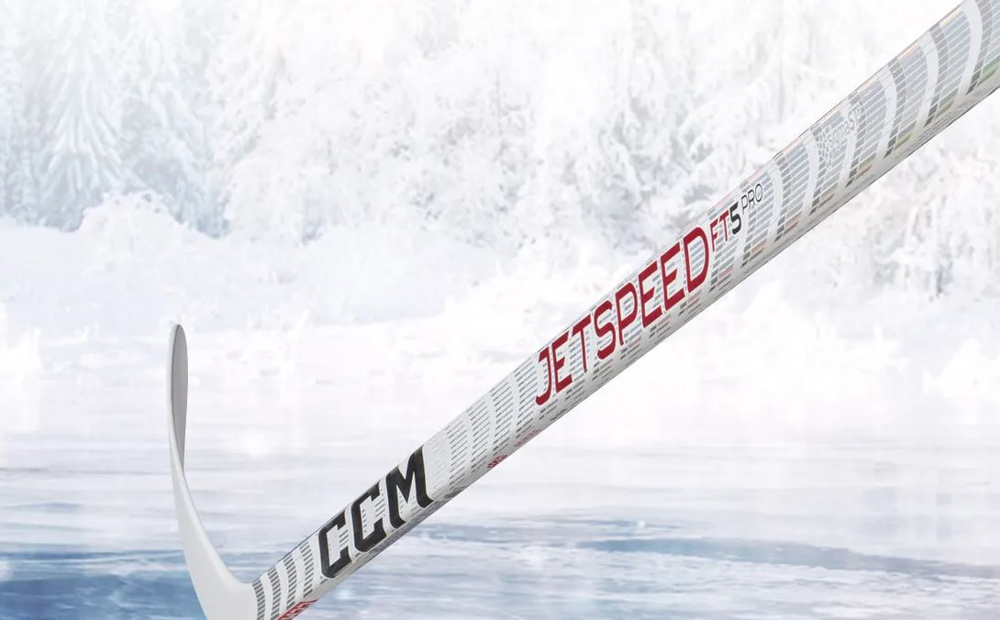
Hokejka: Základní nástroj pro ovládání puku a střelbu.
-
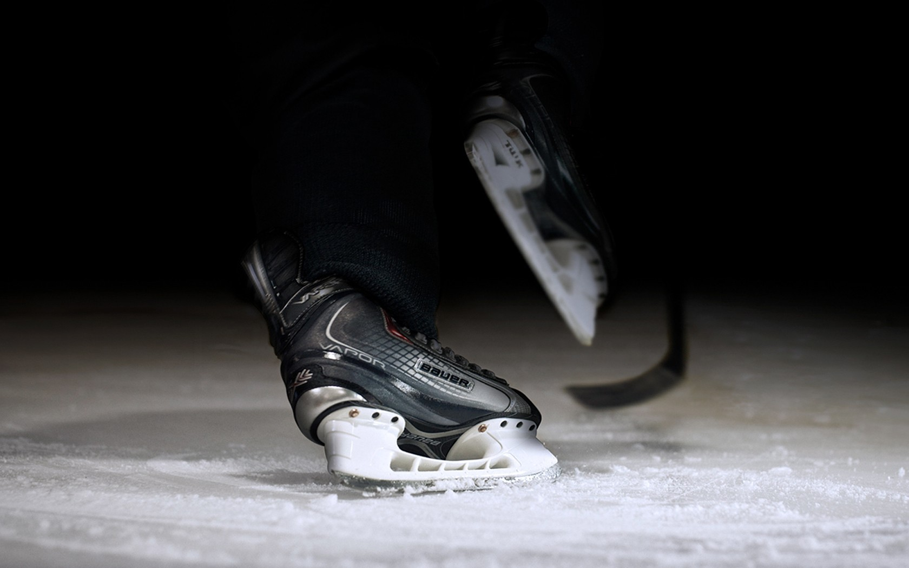
Brusle: Umožňují hráčům rychlý a obratný pohyb po ledě.
-
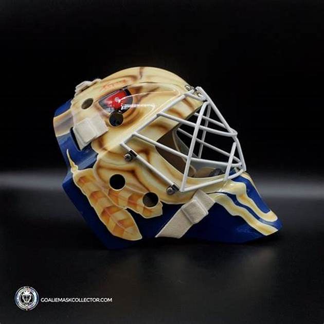
Brankářská maska: Chrání hlavu a obličej brankáře před pukem a hokejkami.
-
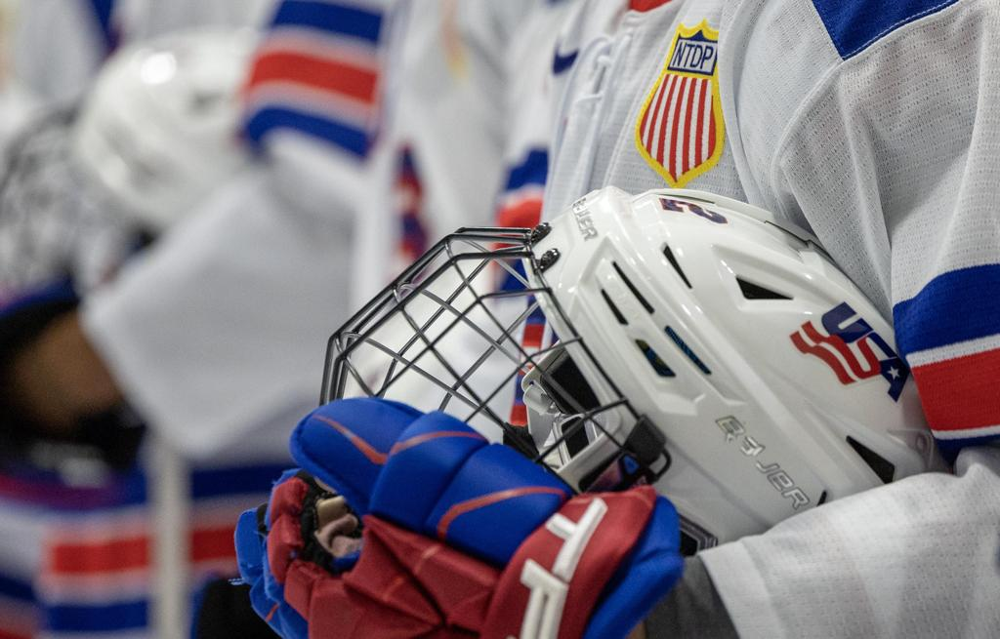
Hráčská helma: Chrání hlavu hráče před nárazy a zraněními.
🏆 Významné momenty
-
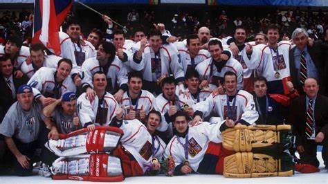
Nagano 1998: První olympijské hry s účastí NHL hráčů, které změnily tvář ledního hokeje.
-
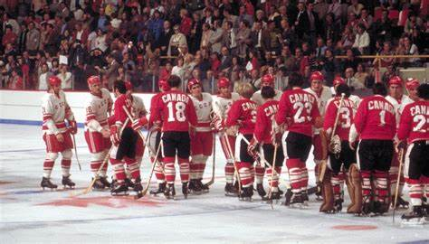
Summit Series 1972: Legendární série zápasů mezi Kanadou a SSSR, symbol studené války v hokeji.
-
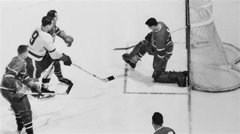
První zápas NHL 1917: Založení nejvýznamnější profesionální ligy světa.
-
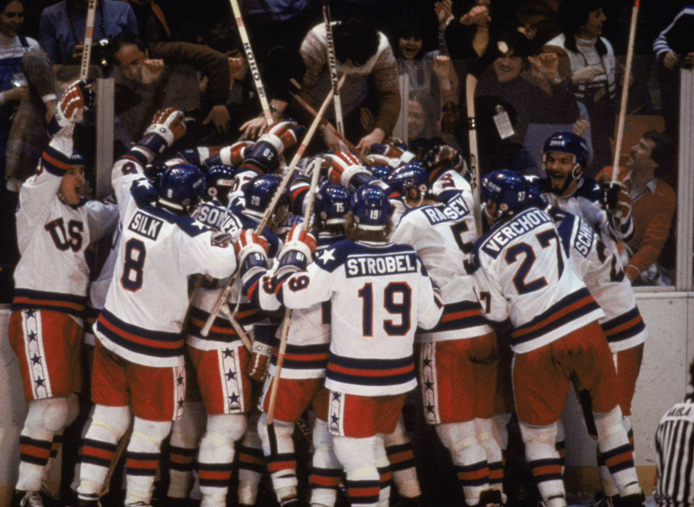
Miracle on Ice 1980: Nečekané vítězství USA nad Sovětským svazem na zimních olympijských hrách.
🏟 Hokejové ikonické místa
-
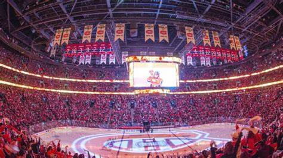
Bell Centre: Domovský stadion Montreal Canadiens, jedna z nejslavnějších hokejových arén.
-
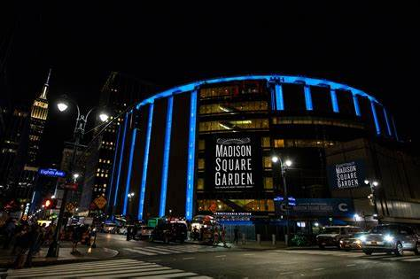
Madison Square Garden: Slavná aréna v New Yorku, hostila nespočet legendárních zápasů.
🎉 Fanoušci a atmosféra
-
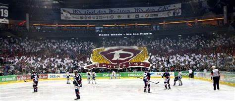
Choreografie fanoušků: Barevná podpora na tribunách, která vytváří jedinečnou atmosféru.
-
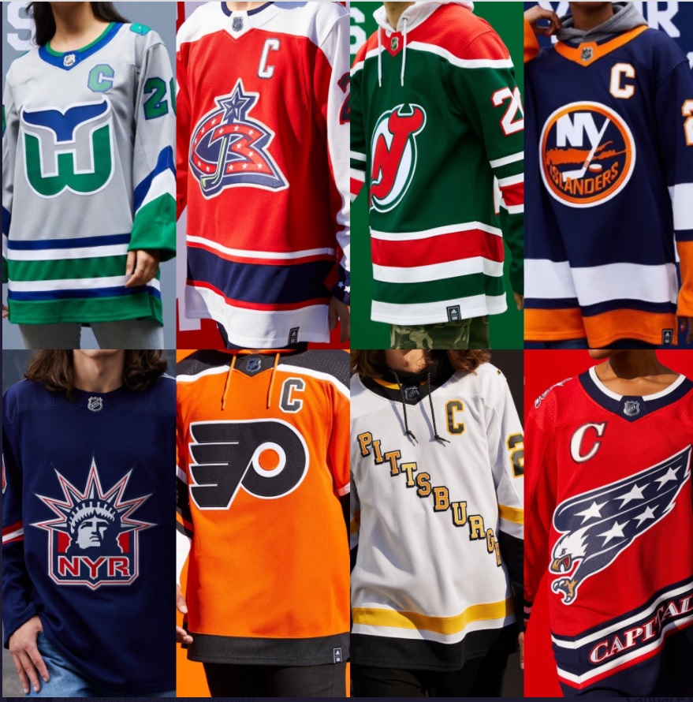
Hokejové dresy: Symbolika týmů a historie vyjádřená barvami a logy.